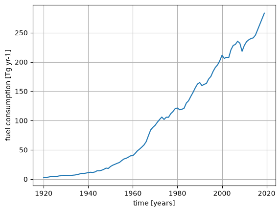

Normalization
In this example, the time evolution of type normalization is demonstrated. A historic emission scenario is simulated with OpenAirClim.
Imports
If the openairclim package cannot be imported, make sure that you have
installed the package with pip or added the oac source folder to PYTHONPATH.
import xarray as xr
import matplotlib.pyplot as plt
import openairclim as oac
xr.set_options(display_expand_attrs=False)
<xarray.core.options.set_options at 0x7fad8e6081a0>
Input files
In order to be able to execute this example simulation, three types of input are required.
Configuration file
historic.tomlEmission inventory
ELK_aviation_2019_res5deg_flat.ncTime evolution file for fuel normalization
time_norm_historic_SSP.nc
Emission inventory
Source: DLR Project EmissionsLandKarte (ELK)
Resolution down-sampled to 5 deg resolution
Converted into format suitable for OpenAirClim
Inventory year: 2019
inv = xr.load_dataset("../input/ELK_aviation_2019_res5deg_flat.nc")
display(inv)
<xarray.Dataset> Size: 2MB
Dimensions: (index: 50854)
Dimensions without coordinates: index
Data variables:
fuel (index) float32 203kB 1.493e+04 7.459e+03 ... 7.471e+03 1.676e+03
CO2 (index) float32 203kB 4.716e+04 2.356e+04 ... 2.36e+04 5.294e+03
H2O (index) float32 203kB 1.847e+04 9.227e+03 ... 9.242e+03 2.073e+03
NOx (index) float32 203kB 161.7 77.61 146.9 ... 965.8 134.5 23.91
distance (index) float32 203kB 2.266e+03 1.188e+03 ... 1.225e+03 272.1
lat (index) float64 407kB -67.5 -67.5 -67.5 -67.5 ... 87.5 87.5 87.5
lon (index) float64 407kB -167.5 -167.5 -167.5 ... 177.5 177.5 177.5
plev (index) float32 203kB 315.4 301.5 288.1 ... 197.5 179.4 171.0
Attributes: (9)Time evolution
Time evolution with normalization of fuel use
Time period: 1920 - 2019
evo = xr.load_dataset("../input/time_norm_historic_SSP.nc")
display(evo)
fig, ax = plt.subplots()
evo.fuel.plot(ax=ax)
ax.grid(True)
<xarray.Dataset> Size: 2kB
Dimensions: (time: 100)
Coordinates:
* time (time) int64 800B 1920 1921 1922 1923 1924 ... 2016 2017 2018 2019
Data variables:
fuel (time) float64 800B 2.669 2.889 3.427 4.145 ... 264.7 274.1 283.5
Attributes: (5)
Simulation run
oac.run("historic.toml")
2026-10-02 15:26:47,291 INFO main:449 (run):
-------------- OPENAIRCLIM MAIN RUN LOG --------------
oac version: 0.19.1
timestamp: 2026-10-02 15:26:47.291425
input file: historic.toml
user: runner
platform: Linux 6.17.0-1022-azure
oac_premium available: False
NOTE:
OpenAirClim is currently in development phase.
The computed output is not to be used for scientific
purposes until the release of our publication.
The NOx response surfaces using the tagging method
are not validated and can produce misleading results
(output species CH4, O3, PMO and SWV).
------------------------------------------------------
START OF LOG
2026-10-02 15:26:47,292 INFO read_config:537 (check_config): Configuration file checked.
2026-10-02 15:26:47,293 INFO read_config:572 (create_output_dir): Create new output directory results
2026-10-02 15:26:47,302 WARNING read_netcdf:85 (_filter_inventories_to_time_range): Longitude values have been automatically updated to be between 0 and 360 degrees to match pre-calculated data.
2026-10-02 15:26:47,307 INFO read_netcdf:204 (open_inventories): Emission inventories openend, attribute sections and time constraints checked successfully.
2026-10-02 15:26:47,315 INFO read_netcdf:257 (_resolve_aircraft_list): No ac data variable found in the emission inventories. Reverting to 'DEFAULT' aircraft from config file.
---------------------------------------------------------------------------
AttributeError Traceback (most recent call last)
File ~/work/oac/oac/openairclim/core/calc_response.py:80, in calc_resp_all(config, resp_dict, inv_dict)
79 try:
---> 80 resp_scale = resp.resp_scale.item()
81 except AttributeError as exc:
File ~/work/oac/oac/.pixi/envs/dev/lib/python3.13/site-packages/xarray/core/common.py:306, in AttrAccessMixin.__getattr__(self, name)
305 return source[name]
--> 306 raise AttributeError(
307 f"{type(self).__name__!r} object has no attribute {name!r}"
308 )
AttributeError: 'Dataset' object has no attribute 'resp_scale'
The above exception was the direct cause of the following exception:
AttributeError Traceback (most recent call last)
Cell In[4], line 1
----> 1 oac.run("historic.toml")
File ~/work/oac/oac/openairclim/core/main.py:506, in run(file_name)
501 elif output_conc:
502 logger.warning(
503 "Computation of 2D concentration responses is not supported "
504 "in this version. Change output settings to: concentrations = false"
505 )
--> 506 _calc_rf_response_species(
507 config, output_dict, ac_lst, inv_dict, full_inv_dict, species_rf
508 )
509 _calc_ch4_response(
510 config, output_dict, ac_lst, inv_dict, full_inv_dict, species_tau
511 )
513 # Sub-species: PMO, SWV
File ~/work/oac/oac/openairclim/core/main.py:198, in _calc_rf_response_species(config, output_dict, ac_lst, inv_dict, full_inv_dict, species_rf)
196 for ac in ac_lst:
197 ac_inv_dict = full_inv_dict[ac]
--> 198 rf_inv_years_dict = calc_resp_all(config, resp_rf_dict, ac_inv_dict)
199 rf_series_dict = convert_nested_to_series(rf_inv_years_dict)
200 _time_range, rf_interp_dict = apply_evolution(
201 config, rf_series_dict, inv_dict, inventories_adjusted=True
202 )
File ~/work/oac/oac/openairclim/core/calc_response.py:83, in calc_resp_all(config, resp_dict, inv_dict)
81 except AttributeError as exc:
82 msg = "No scaling factor found in " + spec + " response file"
---> 83 raise AttributeError(msg) from exc
84 corr = resp_scale
85 if spec in ["O3", "CH4"]:
AttributeError: No scaling factor found in H2O response file
Results
Time series
Emission sums
Concentrations
Radiative forcings
Temperature changes
results_ds = xr.load_dataset("results/historic.nc")
display(results_ds)
# Plot Radiative Forcing and Temperature Changes
ac = "TOTAL"
rf_cont = results_ds.RF_cont.sel(ac=ac) * 1000
rf_co2 = results_ds.RF_CO2.sel(ac=ac) * 1000
rf_h2o = results_ds.RF_H2O.sel(ac=ac) * 1000
dt_cont = results_ds.dT_cont.sel(ac=ac) * 1000
dt_co2 = results_ds.dT_CO2.sel(ac=ac) * 1000
dt_h2o = results_ds.dT_H2O.sel(ac=ac) * 1000
fig, ax = plt.subplots(ncols=2, figsize=(10,5))
ax[0].grid(True)
ax[1].grid(True)
rf_cont.plot(ax=ax[0], color="deepskyblue", label="cont")
rf_co2.plot(ax=ax[0], color="k", label="CO2")
rf_h2o.plot(ax=ax[0], color="steelblue", label="H2O")
dt_cont.plot(ax=ax[1], color="deepskyblue", label="cont")
dt_co2.plot(ax=ax[1], color="k", label="CO2")
dt_h2o.plot(ax=ax[1], color="steelblue", label="H2O")
ax[0].set_ylabel("Radiative Forcing [mW/m²]")
ax[1].set_ylabel("Temperature Change [mK]")
ax[0].legend()
ax[1].legend()
Climate metrics
Absolute Global Temperature Potential (AGTP)
Absolute Global Warming Potential (AGWP)
Average Temperature Response (ATR)
metrics_ds = xr.load_dataset("results/historic_metrics.nc")
display(metrics_ds)